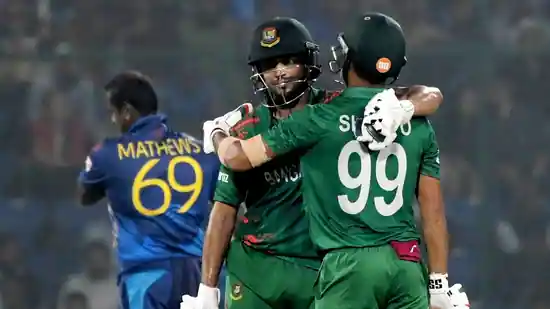

Mathews's bizarre dismissal seemed to distract his team as they crashed to a three-wicket defeat
Indian fans aren't exactly unfamiliar with bizarre cricketing dismissals. Steve Waugh getting out for ‘handling the ball’ in Chennai in the famous 2001 Border-Gavaskar series immediately rings a bell. Inzamam-ul-Haq's dismissal for ‘obstructing the field’ as Suresh Raina threw the ball towards the stumps in Peshawar 2006 was another such instance.
Monday saw another such occurrence as Sri Lanka all-rounder Angelo Mathews became the first international cricketer to be ‘timed out’ in the fifth and final game of the ongoing World Cup at the Feroze Shah Kotla.
click to joinThe unique dismissal, and the following controversy, completely overshadowed Bangladesh’s three-wicket victory that knocked Sri Lanka out of the semi-final race. The instance eclipsed Charith Asalanka’s fantastic 105-ball 108 that guided Sri Lanka to 279 in 49.3 overs. It also put in the shade Najmul Hossain Shanto (90) and Shakib Al Hasan’s (82) 169-run third wicket stand that ended Bangladesh’s streak of six successive defeats with 8.5 overs to spare.
go to second page